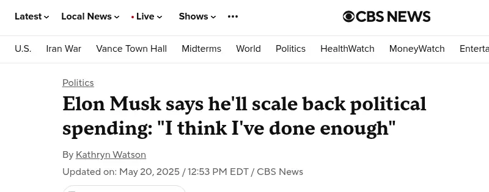
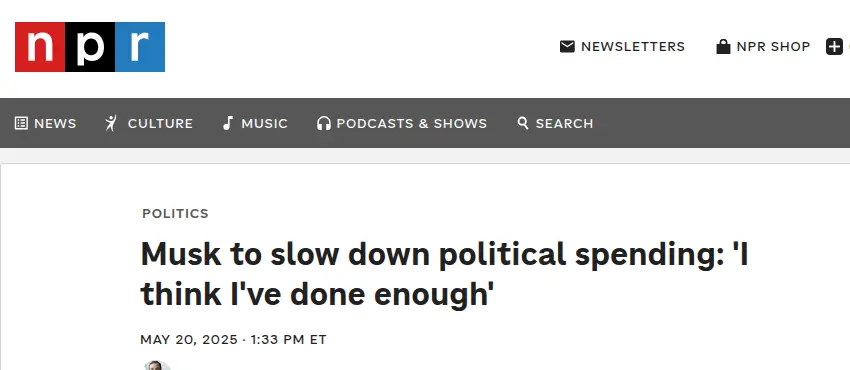
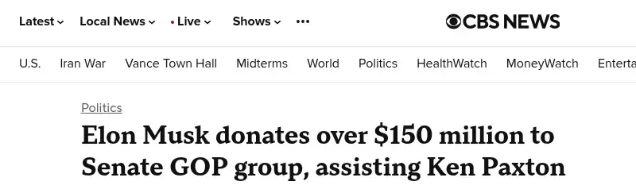

May 2025 · Qatar Economic Forum
“In terms of political spending, I’m going to do a lot less in the future. I think I’ve done enough.”



What happened · October 2026
New filings show he gave $158 million in September to a Senate Republican super PAC. He has spent roughly $366 million this midterm cycle.

We all think he's done quite enough, but apparently Musk just couldn't help himself - and why would he keep his word? Since his last round of funding his president, he became the world's first trillionaire - the money is inconsequential, the power is addictive.